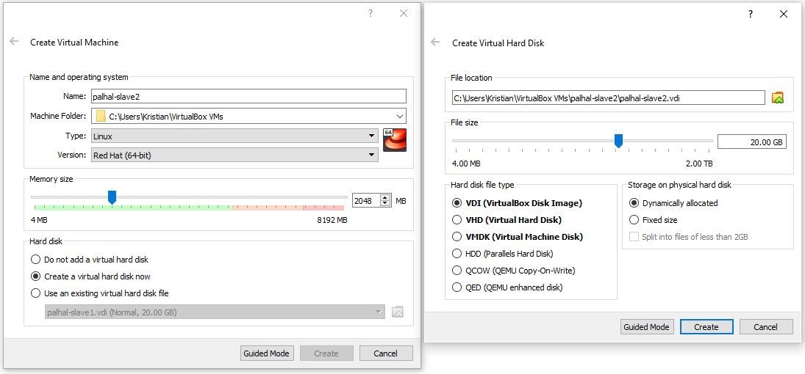
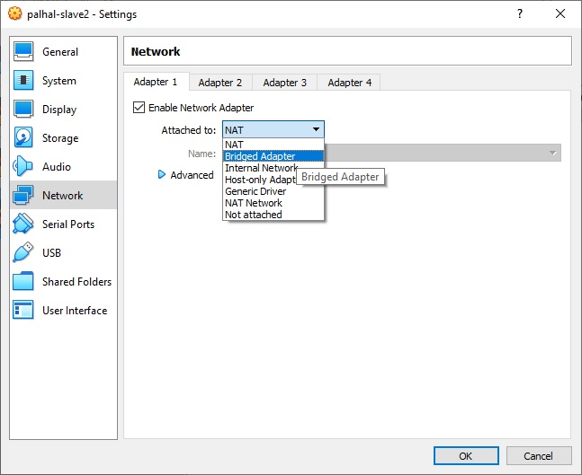
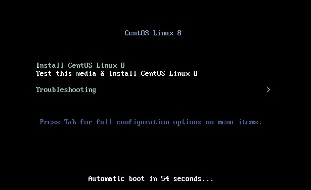
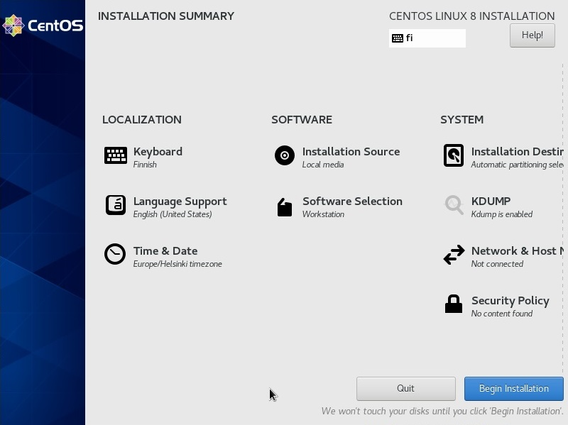
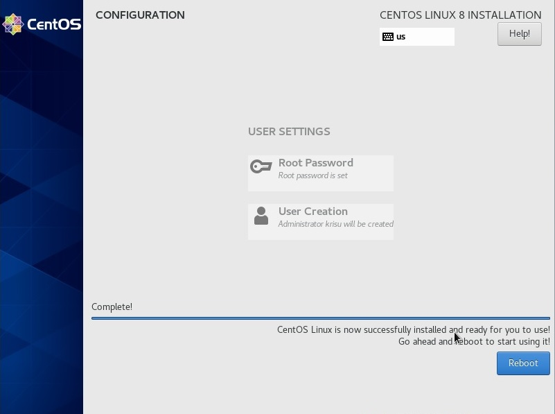
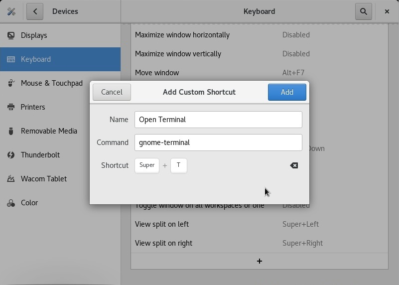
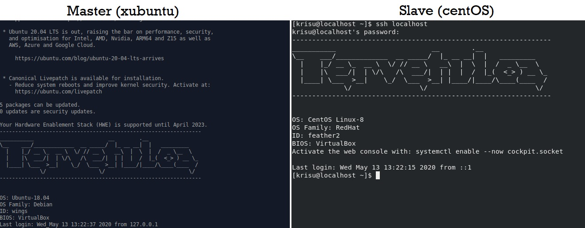

Yksi totuus
13.05.2020, Kristian KoponenTehtävänanto
Palvelinten hallinta H6
Käytetyt laitteet
Windows 10
| Prosessori: | Intel(R) Core(TM) i5-2500K @ 3.30Ghz |
|---|---|
| Keskusmuisti: | 8GiB DDR3 |
| Näytönohjain: | Nvidia GTX 970 |
| Käyttöjärjestelmä: | Windows 10 64-bit |
VirtualBox 6.1
xubuntu 18.04.4 amd64 ISO
CentOS 8.1.1911 ISO
Asenna CentOS
Asenna jokin toinen Linux-levityspaketti orjaksi Saltille. CentOS on hyvä vaihtoehto. Voit esimerkiksi asentaa CentOS:n VirtualBoxiin ja tehdä koneiden välille virtuaaliverkon. Jos käytät Vagrantia, 'cent.vm.box = "centos/7"' on kätevä.
CentOS VirtualBox
Luodaan uusi virtuaalikone VirtualBoxissa. VirtualBox
Asetetaan virtuaalikone verkkoon.
Ladataan uusin CentOS ISO-tiedosto CentOS:n sivuilta. Raportin kirjoittamishetkellä versio 8.1.1911. Laitetaan ladattu levykuva virtuaalikoneeseen. Valitaan koneen käynnistyttyä "Test this media & install CentOS Linux 8"
Asennusvaiheessa muutetaan näppäimistöasetuksia, aikavyöhyke, ohjelmistopohja ja asennuspaikka. Painetaan "Begin Installation".
Asennuksen aikana asetetaan root-salasana ja luodaan käyttäjätunnus. Kun asennus on valmis, painetaan "Reboot".
Kone yrittää buutata uudelleen asennuslevyltä, joten otetaan virtuaalikoneesta levykuva pois. Uudelleenkäynnistyksen jälkeen hyväksytään lisenssi. Heti alkuunsa huomaan että CentOS ei aukaise terminaalia tutulla Super+T shortcutilla. Käydään heti aluksi luomassa oma shortcut. Settings > Devices > Keyboard
Guest Additions
Tecmintin sivuilta löytyy ohjeet VBox Guest Additionsin asentamiseen. Otetaan käyttöön EPEL-repository, päivitetään ja sitten käynnistetään kone uudelleen.
$ sudo yum install epel-release -y
$ sudo yum update -y
$ shutdown -r nowAsennetaan kernel headerit, dev toolsit ja muita paketteja, joita tarvitaan guest additionsin asentamiseen.
$ sudo yum install make gcc kernel-headers kernel-devel perl dkms bzip2 -yAsetetaan KERN_DIR ympäristömuuttuja kernel lähdekoodin hakemistoon ja exportataan.
$ export KERN_DIR=/usr/src/kernels/$(uname -r)Nyt mountataan Guest Additions levykuva VirtualBoxissa. Laitetaan levy virtuaalikoneeseen Devices > Insert Guest Additions CD Image. Ajetaan komennot mountille ja asennuksen ajamiselle.
$ sudo mount -r /dev/cdrom /media
$ cd /media/
$ sudo ./VBoxLinuxAdditions.run Otetaan Drag'n'drop ja Shared Clipboard käyttöön valitsemalla "Bidirectional" Devices pudotusvalikosta. Käynnistetään kone uudelleen.
$ shutdown -r nowHiiri liikkuu ja copypaste toimii nyt sulavasti virtuaalikoneen ja isäntäkoneen välillä, mutta virtuaalikoneen resoluutio ei muutu ikkunan kokoa muuttaessa.
Salt-minion konfiguraatio
Asennetaan Salt-minion.
$ sudo yum install salt-minionSalt-minionia ei näy löytyvän. SaltStackin sivuilta löytyy ohjeet asentamiseen. Täytyy asentaa Salt-minion SaltStackin virallisesta YUM reposta.
$ sudo yum install https://repo.saltstack.com/py3/redhat/salt-py3-repo-latest.el8.noarch.rpm
$ sudo yum clean expire-cache
$ sudo yum install salt-minion -yKäydään konfiguroimassa Salt-minion.
$ echo ""|sudo tee /etc/salt/minion
$ sudoedit /etc/salt/minion
CentOS:n oletuseditori näyttää olevan Vim. Painetaan "i" tekstin kirjoittamiseen. Kirjoittamisen jälkeen painetaan Esc ja :wq (write / quit) tallentamiseen.
$ sudo cat /etc/salt/minion
master: 192.168.1.127
id: feather2Käynnistetään salt-minion uudelleen
$ sudo systemctl restart salt-minion.serviceKäydään hyväksymässä uusi avain masterissa.
$ sudo salt-key -A feather2
The following keys are going to be accepted:
Unaccepted Keys:
feather2
Proceed? [n/Y] y
Key for minion feather2 accepted.Grains.items
Kerää grains.items avulla tiedot orjista, joissa on eri levityspaketti.
Kaikki tiedot saadaan Grains.items komennolla, mutta tuloste olisi todella pitkä. Rajoitetaan ja kysytään orjilta vain minkä perheen ja mikä levityspaketti on käytössä.
$ sudo salt '*' grains.item osfinger os_family
wings:
----------
os_family:
Debian
osfinger:
Ubuntu-18.04
feather1:
----------
os_family:
Debian
osfinger:
Ubuntu-18.04
feather2:
----------
os_family:
RedHat
osfinger:
CentOS Linux-8
Kaikilta kolmelta koneelta tulee oikeat vastaukset.
MOTD
Tee päivän viesti (motd), jossa koneen tyyppi tulee grains osfinger -muuttujasta. Kokeile, että saat eri levityspaketeilla eri tuloksen. Voit hyödyntää aiemmin tekemääsi motd:ia.
Aiemmassa tehtävässä tehtiin MOTD, joka muokattiin sitä edeltävästä info-tehtävästä, joten tilan nimi on edelleen info. Vaihdetaan tilan nimi osuvammin "motd"
$ sudo mv info/ motd/
$ sudo mv motd/info.txt motd/motd.txt
$ sudoedit motd/init.sls
$ cat motd/init.sls
/etc/motd:
file.managed:
- source: salt://motd/motd.txt
- makedirs: True
- template: jinja
- context:
file: motdMuokataan motd.txt muotti
$ sudoedit motd.txt
$ cat motd.txt
-----------------------------------------------------------------
___________ __ .__
\__ ___/_____________ __ _____/ |_ __ __| | _________
| |_/ __ \_ __ \ \/ // __ \ __\ | \ | / _ \__ \
| |\ ___/| | \/\ /\ ___/| | | | / |_( <_> ) __ \_
|____| \___ >__| \_/ \___ >__| |____/|____/\____(____ /
\/ \/ \/
-----------------------------------------------------------------
OS: {{ grains['osfinger'] }}
OS Family: {{ grains['os_family'] }}
ID: {{ grains['id'] }}
BIOS: {{ grains ['biosversion'] }}
Ajetaan tila orjille.
$ sudo salt '*' state.apply motd
...
Summary for wings
------------
Succeeded: 3 (changed=1)
Failed: 0
------------
Total states run: 1
Total run time: 71.378 ms
...
Summary for feather1
------------
Succeeded: 3 (changed=1)
Failed: 0
------------
Total states run: 1
Total run time: 53.086 ms
...
Summary for feather2
------------
Succeeded: 3 (changed=1)
Failed: 0
------------
Total states run: 1
Total run time: 142.823 ms
Kirjaudutaan SSH:lla kummallekin koneelle, jotta nähdään tulos.
Tiedosto kahdelle eri perheen distrolle
Tee tila, joka tekee RedHat-perheellä (esim. CentOS) tiedoston /tmp/redhat ja Debian-perheellä (esim Ubuntu) tiedoston /tmp/debian. Voit käyttää mitä vain eri perheiden levityspaketteja.
Luodaan tilalle uusi kansio
$ sudo mkdir /srv/salt/tmpfileHain jinjan if-else lausekkeiden syntaksia. Löysin Configure Windows and Linux with Single Salt Module ja Template Designer Documentation. Luodaan init.sls tiedosto ja muottitiedosto
$ sudoedit /srv/salt/tmpfile/init.sls
$ cat /srv/salt/tmpfile/init.sls
{% if grains['os_family'] == 'Debian' %}
{% set file = "debian" %}
{% elif grains['os_family'] == 'RedHat' %}
{% set file = "redhat" %}
{% endif %}
/tmp/{{ file }}:
file.managed:
- source: salt://tmpfile/file.txt
- template: jinja
- context:
file: {{ file }}
$ sudoedit /srv/salt/tmpfile/file.txt
$ cat /srv/salt/tmpfile/file.txt
Tämä distro ({{ grains['osfinger'] }}), kuuluu {{ grains['os_family'] }} perheeseen.
Ajetaan tila orjille.
$ sudo salt '*' state.apply tmpfile
...
Summary for wings
------------
Succeeded: 3 (changed=1)
Failed: 0
------------
Total states run: 1
Total run time: 68.560 ms
...
Summary for feather2
------------
Succeeded: 3 (changed=1)
Failed: 0
------------
Total states run: 1
Total run time: 130.145 ms
...
Summary for feather1
------------
Succeeded: 3 (changed=1)
Failed: 0
------------
Total states run: 1
Total run time: 56.521 ms
Luetaan /tmp/redhat ja /tmp/debian tiedostot niitä vastaavilta koneilta.
$ sudo salt 'feather1' cmd.run 'cat /tmp/debian'
$ sudo salt 'feather2' cmd.run 'cat /tmp/redhat'Apache kahdelle eri perheen distrolle
Tee tila, joka asentaa ja konfiguroi Apachen kahteen erilaiseen järjestelmään, esim. CentOS ja Ubuntu. Paketin nimi on CentOS:ssa "httpd". Käytä Salt-koodin generointia muoteilla.
Viimeisen tehtävän aikana asennettiin Nginx. Poistetaan se, jotta Apache toimii.
$ sudo salt '*' cmd.run 'systemctl stop nginx.service'
$ sudo salt '*' cmd.run 'systemctl disable nginx.service'
$ sudo salt '*' pkg.purge nginx
$ sudo salt '*' pkg.purge nginx-common
Luodaan uusi tilakansio ja init.sls.
$ sudo mkdir /srv/salt/apache2
$ cat /srv/salt/apache2/init.sls
{% if grains['os_family'] == 'Debian' %}
{% set package = "apache2" %}
{% elif grains['os_family'] == 'RedHat' %}
{% set package = "httpd" %}
{% endif %}
{{ package }}:
pkg.installed
Ajetaan tila orjille
$ sudo salt '*' state.apply apache2
...
Summary for feather1
------------
Succeeded: 3 (changed=1)
Failed: 0
------------
Total states run: 1
Total run time: 38.482 s
...
Summary for wings
------------
Succeeded: 3 (changed=1)
Failed: 0
------------
Total states run: 1
Total run time: 39.165 s
...
Summary for feather2
------------
Succeeded: 3 (changed=1)
Failed: 0
------------
Total states run: 1
Total run time: 29.165 sMuokataan vielä oletussivu kaikilla orjilla.
$ sudoedit /srv/salt/apache2/init.sls
$ cat /srv/salt/apache2/init.sls
...
/var/www/html/index.html:
file.managed:
- source: salt://apache2/index.html
- template: jinja$ sudoedit /srv/salt/apache2/index.html
$ cat /srv/salt/apache2/index.html
Toimii.<br>
{{ grains['osfinger'] }}Ajetaan tila taas orjille.
$ sudo salt '*' state.apply apache2Tarkastetaan localhost kaikilla orjilla.
$ sudo salt '*' cmd.run 'curl -sS localhost'Localhostiin ei saatu yhteyttä CentOS-koneella. Arvelen ettei palvelin ole käynnissä.
$ sudo salt 'feather2' cmd.run 'systemctl status httpd'
feather2:
* httpd.service - The Apache HTTP Server
Loaded: loaded (/usr/lib/systemd/system/httpd.service; disabled; vendor preset: disabled)
Active: inactive (dead)
Docs: man:httpd.service(8)Lisätään init.sls:n käynnistystila.
$ sudoedit /srv/salt/apache2/init.sls
$ cat /srv/salt/apache2/init.sls
{% if grains['os_family'] == 'Debian' %}
{% set package = "apache2" %}
{% elif grains['os_family'] == 'RedHat' %}
{% set package = "httpd" %}
{% endif %}
{{ package }}:
pkg.installed
/var/www/html/index.html:
file.managed:
- source: salt://apache2/index.html
- template: jinja
{{ package }}.service:
service.runningAjetaan tila orjille vielä kerran.
$ sudo salt '*' state.apply apache2
...
ID: httpd.service
Function: service.running
Result: True
Comment: Started Service httpd.service
Started: 15:18:08.760119
Duration: 405.087 ms
Changes:
----------
httpd.service:
True
Summary for feather2
------------
Succeeded: 3 (changed=1)
Failed: 0
------------
Total states run: 3
Total run time: 4.598 s
Kokeillaan uudelleen localhostia.
$ sudo salt '*' cmd.run 'curl -sS localhost'Kuten kuvasta näkyy. Toimii.
Lähteet
http://terokarvinen.com/2020/configuration-managment-systems-palvelinten-hallinta-ict4tn022-spring-2020/
https://www.centos.org/download/
https://www.tecmint.com/install-virtualbox-guest-additions-in-centos-rhel-fedora/
https://repo.saltstack.com/#rhel
http://terokarvinen.com/2018/configure-windows-and-linux-with-salt-jinja-if-else-and-grains
https://jinja.palletsprojects.com/en/2.11.x/templates/